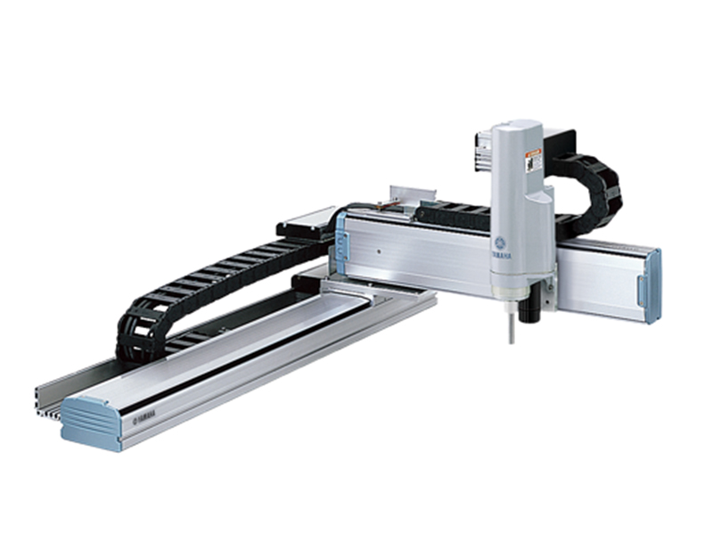

Robô Cartesiano

O robô cartesiano é um manipulador industrial que realiza seus movimentos ao longo dos eixos X, Y e Z. Sua estrutura é formada por guias lineares, proporcionando elevada precisão, repetibilidade e facilidade de programação. É um dos robôs mais utilizados em aplicações que exigem movimentação linear e posicionamento preciso de peças.
Princípio de Funcionamento
O funcionamento do robô cartesiano baseia-se na movimentação independente dos eixos X, Y e Z. Cada eixo é acionado por motores elétricos e sistemas de controle que permitem posicionar a ferramenta com grande precisão dentro da área de trabalho.
Características Técnicas
- Movimentação linear nos eixos X, Y e Z.
- Alta precisão e repetibilidade.
- Estrutura simples e resistente.
- Fácil programação.
- Baixo custo de manutenção.
- Boa capacidade de carga.
Aplicações Industriais
- Movimentação de materiais.
- Máquinas CNC.
- Impressoras 3D.
- Pick and Place.
- Carga e descarga de máquinas.
- Linhas de montagem.
Integração com Automação e IoT
O robô cartesiano pode ser integrado a Controladores Lógicos Programáveis (CLPs), sensores inteligentes e plataformas de Internet das Coisas (IoT). Essa integração permite monitorar sua operação em tempo real, realizar manutenção preditiva e otimizar processos produtivos de forma automática.
Modelos Comerciais
| Fabricante | Modelo |
|---|---|
| Bosch Rexroth | CKK |
| Parker | HMR |
| Yamaha | XY-X Series |
Imagens de Modelos Comerciais

CKK
Bosch Rexroth

HMR
Parker

XY-X Series
Yamaha